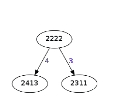
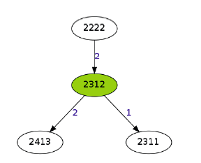

Maximum parsimony analysis of gene copy number changes
Table of content
Introduction
...
FISH
...
Methods
RSMT
...
...
Results
...
...
Discussion
Biological context
Generalities about cancer
Cancer = evolutionary process (driven by mutations in tumors)
Several processes: e.g. indels, copy number aberrations, gene fusions,...
Considerable intra/inter-tumor heterogeneity $\rightarrow$ drug resistance, clinical outcome,…
Why phylogenetic trees to study mutations?
Good tools to show of multiple subclones in tumors
Highlight important changes leading to big genome aberrations
E.g. crucial genes for the evolution of cancers $\rightarrow$ possible targets for innovative treatments
Why did the authors decide to study gene copy numbers specifically?
Affects large fraction of the genome
Caused by failures in DNA repair system $\rightarrow$ increase or decrease of gene copy number
Could be used to infer tumor phylogeny and is easier to scale than other models (e.g. based on single cell sequencing data $\rightarrow$ quite expensive)
Good tool available to study these genomic modifications $\rightarrow$ FISH !
What is FISH?
Method to copy number changes in tumor cells
Gene A
Gene B
Gene C
Count
12
15
7
FISH - slide 2
FISH - slide ...
Rectilinear Steiner Minimum Trees (RSMT)
INPUT
Cells
#Gene A
#Gene B
#Gene C
#Gene D
1
2
2
2
2
2
2
4
1
3
3
2
3
1
1
Rectilinear Steiner Minimum Trees (RSMT)
OUTPUT


Rectilinear Steiner Minimum Trees (RSMT)
WEIGHT FUNCTION
Resultats
Discussion
Questions
Maximum parsimony analysis of gene copy number changes

 http://techfnord.de/bioinf/ulb/mpa
Presentation proudly made without
http://techfnord.de/bioinf/ulb/mpa
Presentation proudly made without